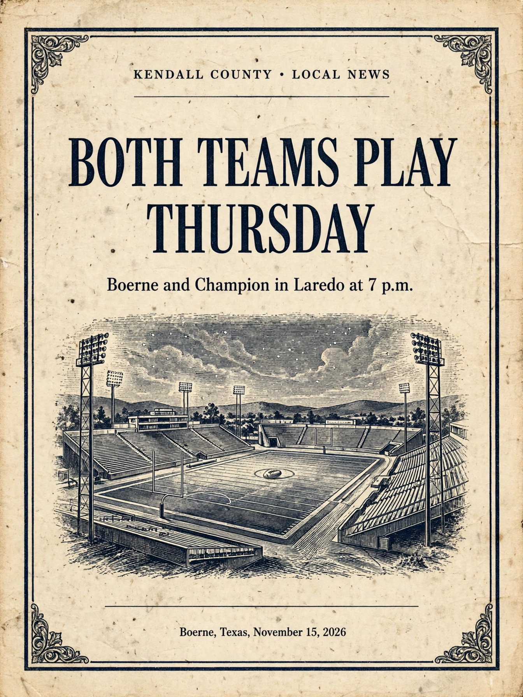

Both Boerne ISD teams play Thursday in Laredo
Both Boerne ISD football teams will play their area round playoff games in Laredo on Thursday, November 19, at the same time, the Boerne Star reported November 14.
Boerne High faces Mercedes at Shirley Field at 7 p.m. Thursday in the Class 5A Division II area round, according to the Boerne Star, Dave Campbell's Texas Football, and RGVSports.com. Boerne is 11-0. Mercedes is 8-3, per the Dave Campbell's area round listing.
Boerne Champion will play McAllen at 7 p.m. Thursday in the Class 5A Division I area round at the Student Activity Center in Laredo, according to Dave Campbell's Texas Football and RGVSports.com. Champion is 10-1. McAllen is 11-0, per the Dave Campbell's listing.
Boerne reached the area round by beating San Antonio Brackenridge 56-14 on Thursday night, November 12. Mercedes beat Mission Veterans Memorial 44-42 on Friday night.
Champion reached the area round by beating Eagle Pass Winn 72-0 on Friday night, November 13. McAllen beat Weslaco East 62-19 on Friday night.
What happens next: the winners Thursday advance to the regional round, which is played Thanksgiving weekend.
Sources
- Boerne Star, Second Round Playoff info: Both Boerne ISD football teams will play Thursday in Laredo (November 14, 2026): https://www.boernestar.com/article/14576,second-round-playoff-info-both-boerne-isd-football-teams-will-play-thursday-in-laredo
- Dave Campbell's Texas Football, TXHSFB Playoffs: Game Times and Locations: https://www.davecampbells.com/articles/2026/11/07/txhsfb-playoffs-game-times-and-locations
- RGVSports.com, RGV Football Playoff Schedule and Scores, Area Round: https://rgvsports.com/rgv-football-playoff-schedule/